地政学
済州は韓国本土、日本、中国、東南アジアを結ぶ海上と航空の結節点です。軍事、観光、国際会議、海洋資源が重なり、島の自治と国家安全保障、住民の生活圏が近い距離で交差します。静かな海も政治的な場所です。

🇰🇷 韓国 / 東アジア / World City Atlas
火山島の地形、海女の労働、観光経済、4・3の記憶、移住者の暮らしが重なる韓国南方の島。海と風が都市の時間を作ります。
都市の骨格
済州は一つの市街だけでなく、漢拏山を囲む集落、港、空港、畑、観光地の連なりとして動きます。島の距離感は車、バス、フェリー、航空便、風と雨の季節に左右されます。
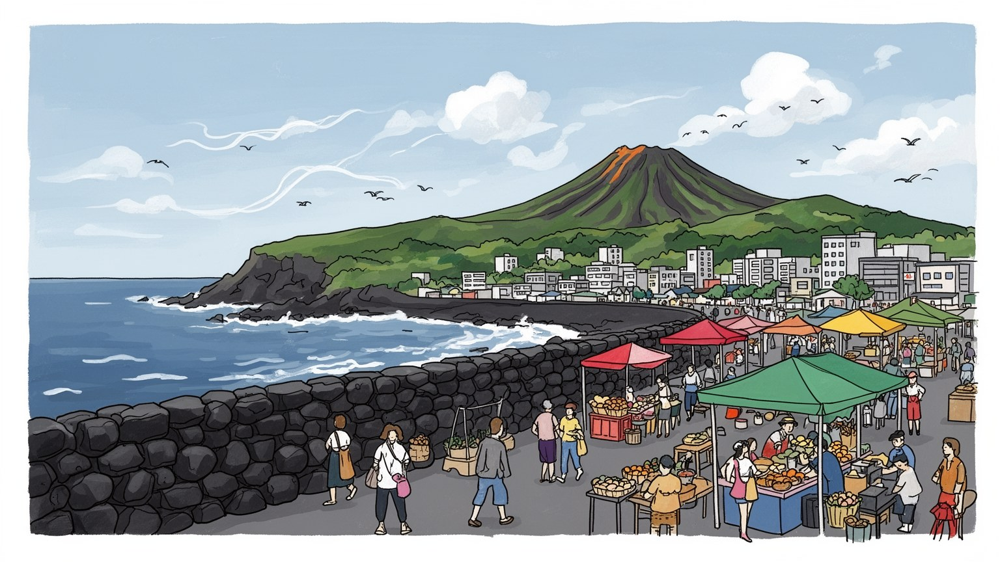
済州は韓国本土、日本、中国、東南アジアを結ぶ海上と航空の結節点です。軍事、観光、国際会議、海洋資源が重なり、島の自治と国家安全保障、住民の生活圏が近い距離で交差します。静かな海も政治的な場所です。
観光、柑橘農業、漁業、物流、再生エネルギー、デジタル拠点が雇用を作ります。ホテルや飲食、清掃、配送、農作業は季節変動が大きく、若者や移住者の働き方、住宅費、賃金差を島の日々の分配論へ押し出します。
海女、村の堂、祖先祭祀、シャーマン的な儀礼、仏教寺院、教会が島の記憶を支えます。4・3の追悼、方言、石垣、食文化は観光資源である前に、住民が喪失と生活を語る言葉です。祭りと祈りは今も島に深く残ります。
観光客は海岸、オルレ道、滝、火山丘を巡りますが、住民には車移動、水、住宅、医療、学校、台風対策が日常です。移住者と長く住む人、観光の利益と混雑の負担が同じ島で重なります。暮らしの速度が観光を測ります。
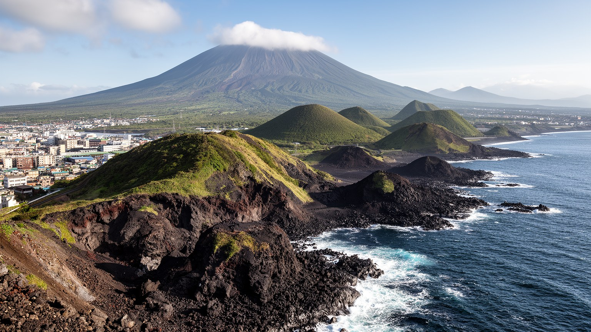
済州の都市構造は、島の中央にそびえる漢拏山と、その斜面に散らばる小火山丘、玄武岩の海岸で決まります。地図では済州市と西帰浦市が行政の中心に見えますが、実際の生活は山を回り込む道路、海岸沿いの集落、畑、港、観光地の連続として広がります。火山性の土壌は水を吸い込みやすく、湧水、地下水、溶岩洞窟、石垣の畑が島の暮らしを支えてきました。強い風は家の向き、石塀、防風林、港の使い方に影響し、霧や雨は山側と海側で違う表情を作ります。済州を見る時、海岸の明るさだけを切り取ると、地形が人の移動と仕事を縛ってきた現実を見落とします。空港から中心市街、畑、牧場、海岸の食堂、オルレ道までの距離は短い一方、公共交通だけで暮らすには不便な場所も多いです。島の美しさは、同時に水、風、坂、台風への備えとして住民に経験されます。集落の位置、墓地の向き、畑の石積み、海へ下りる細道には、地形に合わせて暮らしてきた時間が残ります。海岸の集落では漁港、民宿、食堂、畑、墓地が近く、山側では牧場や森が霧の中で生活の境界になります。こうした細部が、島を一枚の観光地ではなく複数の生活圏に分けています。開発が進むほど、この細かな土地の読み方を失わずに道路や住宅を置けるかが問われます。地形の読み違いは暮らしの不便にもなります。火山島の地形は観光の背景ではなく、都市の骨格です。
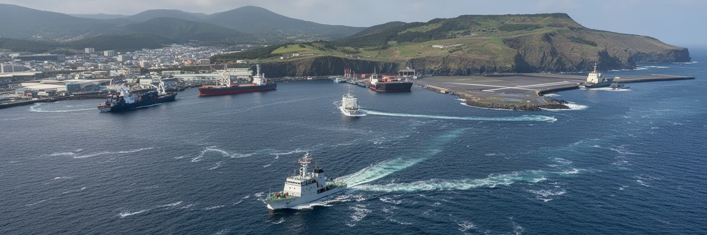
済州は韓国本土の南に位置し、朝鮮半島、日本列島、中国沿岸、東南アジアへ向かう海と空の道に近いです。日常的には国内線とフェリーが人、食品、建材、観光客を運び、広い視野では東シナ海の安全保障、漁業、海洋資源、海底ケーブル、国際観光の動きともつながります。済州国際空港は島の生命線であり、天候で航空便が乱れると物流と観光の両方がすぐ影響を受けます。港は漁業と貨物、クルーズ、周辺離島への移動を支えますが、軍港や基地をめぐる議論は、国家の安全保障と住民の環境、平和運動、漁村の生活を衝突させてきました。島は遠い避暑地ではなく、国家の周縁でありながら国境意識に近い場所です。観光客の目には穏やかな海でも、住民にとっては仕事場、墓地へ向かう航路、台風の危険、政治的な決定が重なる空間になります。国際会議や平和を掲げる行事も、島の位置を外へ示す機会になりますが、その言葉が住民の不安や補償、環境保全と結びつくかが重要です。貨物の多くを外部に頼る島では、燃料や食品の価格、航空路線の変化、港湾の混雑が暮らしに直結します。外へ開くことは豊かさをもたらす一方、脆さも同時に増やします。海を越える接続が増えるほど、島の自治と国家政策の距離は近くもなります。済州の地政学は、地図上の位置だけでなく、島民が海をどう使い、誰のための開発かを問い続ける生活の論点です。
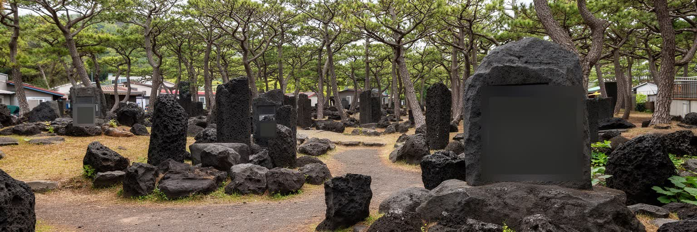
済州を理解するうえで、1948年前後の4・3事件の記憶は避けられません。冷戦の始まり、朝鮮半島の分断、国家権力、武装蜂起、鎮圧、村落の破壊、民間人の犠牲は、長く公に語りにくい傷として残りました。家族を失った人、山へ逃げた人、沈黙を選ばざるを得なかった人の記憶は、観光地の明るい景色の下に重なります。現在は平和公園、慰霊碑、証言、教育を通じて追悼が進みますが、記憶をどう語るかは今も政治と世代の問いです。済州の風景にある石垣、村道、海辺、森は、単なる景観ではなく、暴力と避難の記憶を宿す場所でもあります。重要なのは、島を悲劇だけで固定しないことです。住民は喪失を抱えながら、農業、漁業、観光、学校、祭礼、家族の暮らしを続けてきました。追悼は過去を閉じ込める行為ではなく、国家と市民の関係、地域の尊厳、平和の意味を現在の都市生活へ戻す作業です。観光で訪れる人も、慰霊の場所を単なる見学地として消費せず、なぜ沈黙が長く続いたのか、誰が証言を支えたのかを考える必要があります。遺族の名誉回復、資料の保存、学校での学び、地域ごとの慰霊は、日常の言葉を少しずつ変えてきました。語れる場所が増えることは、島の共同体を修復する条件でもあります。記憶を公共空間に置くことは、島の未来を暴力の繰り返しから遠ざける実践でもあります。済州の静けさを読むには、その沈黙の厚みも読む必要があります。
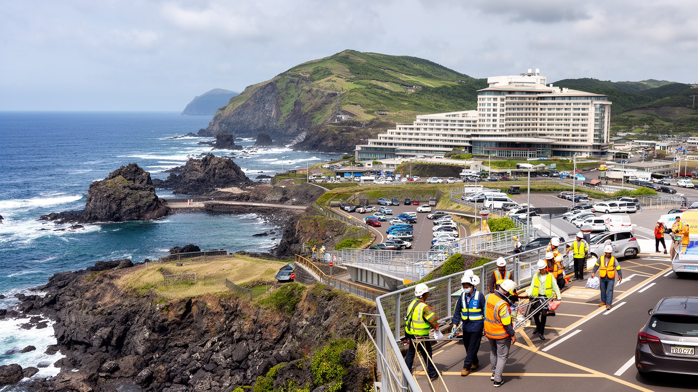
済州の経済は観光と深く結びつきます。海岸、火山丘、滝、オルレ道、博物館、カフェ、リゾート、ゴルフ場、免税店は、韓国国内外からの来訪者を受け入れます。観光は雇用、税収、道路整備、飲食店の多様化をもたらす一方、季節変動、低賃金、長時間労働、家賃上昇、交通混雑、廃棄物を生みます。ホテルの清掃、厨房、レンタカー、ガイド、土産物店、農産物の出荷、空港の地上業務は、観光客の写真には写りにくいです。観光業が強い島では、台風、感染症、国際関係、航空運賃の変化が生活にすぐ響きます。若者にとって観光は仕事の入口である一方、安定したキャリアや住まいを得にくい分野にもなります。移住者がカフェや宿を開き、新しい感性を持ち込むこともありますが、土地価格の上昇は地元住民の選択肢を狭めます。観光地の成功は、混雑する道路、騒音、短期宿泊、海岸のごみ、地域商店の変化として住民に返ってきます。東門市場の屋台、海岸の夜店、レンタカー店、ライブバーも、観光の波に合わせて営業時間と人手を変えます。オフシーズンの収入、繁忙期の人手不足、外国人観光への依存は、小さな事業者ほど大きなリスクになります。観光の数字が伸びても、地域に残る利益の配分を見なければなりません。済州の観光を読むには、名所の数ではなく、訪問者の満足と住民の暮らしがどこで両立し、どこで衝突するかを見る必要があります。島を消費する速度が、島で暮らす速度を壊さないことが重要です。
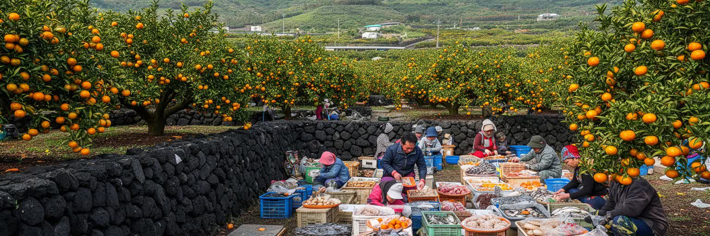
済州の食と農業は、火山性の土地、海風、地下水、家族経営の畑に支えられています。柑橘類は島の代表的な作物で、冬の景色や贈答文化にも結びつきます。畑には石垣と防風林があり、風から作物を守るだけでなく、島の風景を形作ります。黒豚、海産物、ワカメ、アワビ、太刀魚、そば、豆腐、郷土料理は、観光の看板である前に日常の食卓と市場の記憶です。ただし農業は高齢化、労働力不足、価格変動、輸送費、台風被害、水の管理に悩みます。観光レストランで消費される食材の背後には、収穫、選果、冷蔵、港や空港への輸送、厨房の仕込みがあります。移住者や若い農家が新しい加工品、カフェ、直売、体験農業を試す一方、土地の価格が上がると農地を守ることは難しくなります。市場では観光客向けの華やかな食と、住民が毎日買う魚、野菜、惣菜が同じ通路に並びます。朝の東門市場では魚の匂い、柑橘の甘さ、値段を尋ねる声が重なり、通りの小商いが島の台所を支えます。農業が観光体験になると、畑は見せる場所にもなりますが、収穫の失敗や水不足の痛みは作り手が負います。食の評判を守るには、土と海の状態を守ることが欠かせません。済州の食を読むことは、名物を味わうだけでなく、誰が畑を続け、誰が市場で売り、誰が台所で働くのかを見ることです。島の味は、自然の恵みだけでなく、風の中で手を動かす労働によって保たれています。
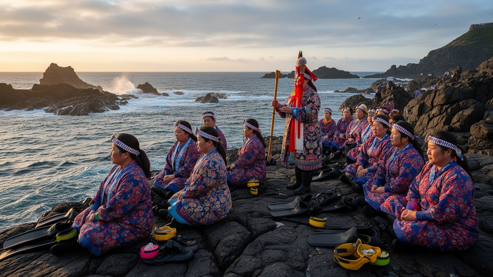
済州の海女文化は、海に潜って貝や海藻を採る女性たちの労働、技術、相互扶助、信仰が結びついた生活文化です。海女は観光の象徴として語られやすいですが、その核心は冷たい水、潮流、危険、分配、経験の継承にあります。漁場のルール、共同作業、休息小屋、祭礼、海の神への祈りは、女性たちが家計と村を支えてきた歴史を示します。高齢化と若い担い手の減少により、海女の仕事は文化遺産として注目される一方、実際の労働としては続ける難しさを抱えます。済州には村ごとの堂、祖先祭祀、シャーマン的な儀礼、仏教寺院、教会もあり、信仰は災いを避け、海と土地への敬意を表し、共同体を結び直す役割を持ちます。海女の知識は、天候、潮、身体の限界、仲間の変化を読む経験に支えられます。そこには学校では測りにくい技能と、女性が地域経済を動かしてきた自負があります。漁獲量の変化、海水温、観光客の視線、後継者不足は、文化の保存を現実の仕事として難しくします。地域の祭りや祈りは、働く海の危険を共同体で受け止める方法でもあります。共同の分配は、競争を抑え、資源を守る知恵にもなりました。観光客が見る演示だけで海女文化を理解すると、危険と誇り、女性の経済力、村の調整を見落とします。済州の信仰と海女を読むことは、海を資源としてではなく、命を預ける場所として扱う島の倫理を読むことです。
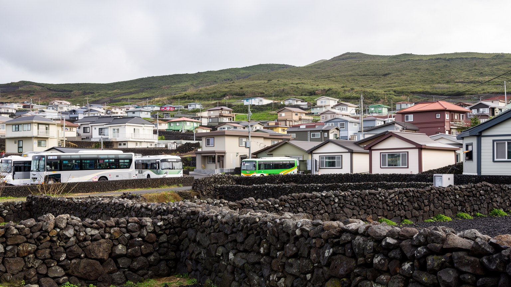
済州は韓国本土の大都市から距離を置きたい人にとって、自然に近い生活、子育て、創作、遠隔勤務の候補地になってきました。移住者はカフェ、宿、農園、小さな出版社、IT関連の仕事を始め、島の文化に新しい層を加えます。ただし移住の物語は、住宅価格、賃貸の少なさ、車依存、医療や教育の選択肢、地域社会との距離を伴います。長く住む人にとっては、土地価格の上昇や観光地化が、家族の住まい、農地、静かな集落の維持を難しくすることがあります。新築住宅や別荘、宿泊施設が増えるほど、水、下水、道路、景観の負担も増えます。島では知り合いの関係が生活の安心を支える一方、外から来た人にはその関係に入る時間が必要になります。済州の住宅問題は、都会からの逃避先という単純なイメージでは読めません。仕事を持つ人、退職者、若い家族、季節労働者、済州大学に通う学生、地元の高齢者が、同じ市場で住まいを探します。子どもの通学、救急医療、冬の暖房、台風時の修理、親族との距離は、移住後に初めて重さを持ちます。地域行事に参加するか、農地をどう使うかも、暮らしの信頼に関わります。短期滞在の住宅が増える地区では、隣人関係が薄くなり、学校や商店の需要も読みづらくなります。移住を受け入れるには、空き家活用、交通、医療、地域の対話を一緒に整える必要があります。憧れの島で暮らすことは、自然の近さだけでなく、地域の負担をどう分け合うかを問う生活です。
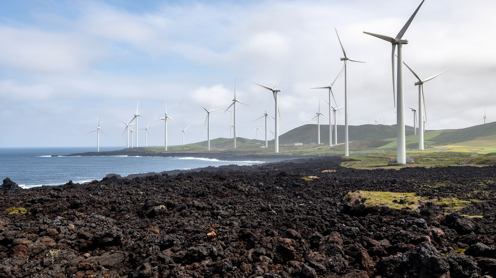
済州は強い風と日照を活かし、再生エネルギーや電気自動車の実験地として語られることが多いです。風力発電、太陽光、スマートグリッド、蓄電、充電網は、島が化石燃料への依存を減らし、環境負荷を下げるための重要な試みです。一方で、風車や送電線、太陽光設備の立地は、景観、鳥類、漁業、農地、住民合意の論点を伴います。観光客が求める美しい海岸と、エネルギーを自給したい島の現実は、同じ場所で調整されます。水資源も大きな論点です。地下水は農業、観光、住宅を支えますが、開発と人口増、気候変動で負担が増します。ごみ、下水、レンタカーの増加、海岸漂着物は、観光地としての魅力と住民の生活環境を同時に揺さぶります。台風や豪雨で道路や港が乱れると、物資、医療、観光、農作業が一度に影響を受けます。エネルギー転換は電力の話に見えて、実際には土地利用、料金、景観、雇用、災害時の復旧を含む生活政策です。誰が利益を得て、誰が設備を受け入れるのかを明確にしなければ、環境目標は対立を生みます。環境政策を成功させるには、技術だけでなく、地域への利益配分、説明、景観への配慮、消費の抑制が必要になります。済州の風は資源であると同時に、どのような未来を選ぶかを住民に問いかける力でもあります。環境の島という言葉は、暮らしの負担を軽くして初めて意味を持ちます。島の未来は、発電量だけでなく水と海岸を守る合意にかかっています。
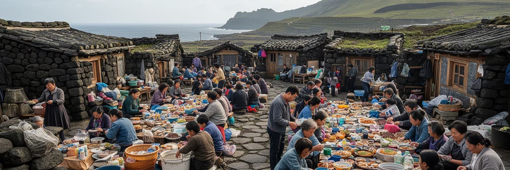
済州の文化は、独特の方言、石の家、石垣、村の堂、海辺の市場、家族の祭祀、オルレ道、食堂の会話の中にあります。韓国本土と強く結ばれながら、島には移動の難しさ、海を越える不安、共同体の密度、外から来る権力への警戒が積み重なってきました。方言は単なる発音の違いではなく、島で暮らした人々の経験を運ぶ言葉です。若い世代の都市化、学校教育、メディア、観光の標準語化により、方言や古い生活語は失われやすい一方、演劇、音楽、文学、地域教育、食文化を通じて再評価も進みます。市場では地元の魚、野菜、柑橘、惣菜、観光客向けの商品が並び、住民の日常と観光消費が同じ通路で交差します。済州市の商業施設、海岸集落の小さな店、地域紙やラジオ、SNSの島内情報を行き来すると、同じ島の中にも世代と生活速度の違いが見えます。祭祀や墓参りの習慣は、家族が島を離れても帰る理由を作ります。海女祭、菜の花や火祭り、済州ユナイテッドの試合、夜のライブは、若者と年長者が島を共有する場です。言葉を残すことは、過去を飾ることではなく、生活の細かな知恵を渡すことでもあります。済州の文化を読むには、華やかなリゾートだけでなく、雨の日のバス停、港の朝、学校帰りの子ども、墓参り、近所の食堂を見る必要があります。島の文化は保存される展示物ではなく、毎日使われ、時に変わり、時に忘れられながら続く生活の方法です。
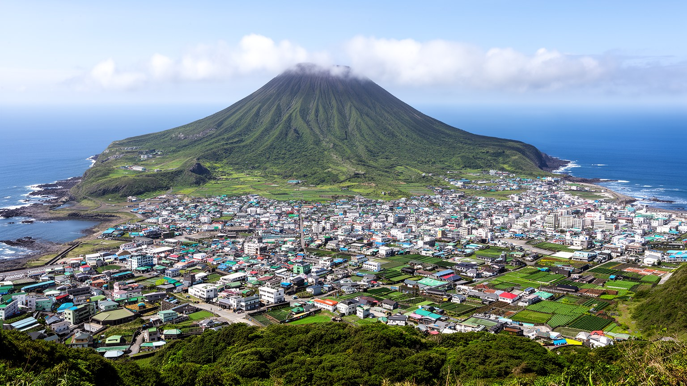
済州は、火山景観と海の美しさで知られる一方、記憶、労働、信仰、環境、移住、地政学が重なる生活の島です。観光客にとっては短い休暇の目的地でも、住民にとっては水を守り、台風に備え、農地と海を使い、学校と病院へ通い、家族の墓を守る場所です。4・3の記憶は、島を明るいリゾートだけで語れない理由を示します。海女文化や村の信仰は、島の女性、労働、共同体の歴史を伝えます。観光と移住は新しい収入と文化をもたらしますが、住宅、交通、廃棄物、水資源、土地価格の負担も増やします。再生エネルギーや電気自動車は未来の象徴になり得ますが、住民の合意と環境への配慮なしには島の新しい重荷になります。済州を読む鍵は、海岸の写真、カフェ、火山丘を個別に見ることではなく、それらが誰の暮らしと労働で維持され、どの記憶の上に立っているかを考えることです。航空便、港、バス、病院、学校、畑、漁場、慰霊の場所を同じ地図に置くと、島の都市性が見えてきます。市場の朝食、夜の音楽、子どもの通学、高齢者の通院、サッカー観戦もその地図に入ります。済州は孤立した自然ではなく、外部と強く結ばれながら、自分の速度を守ろうとする都市圏です。その速度を守るには、観光の量、開発の場所、移住の受け入れ、水とエネルギーの使い方を、住民の生活から考え直す必要があります。島の価値は、訪れる人を惹きつける景観だけでなく、そこで暮らす人が尊厳を持って生活を続けられるかに表れます。